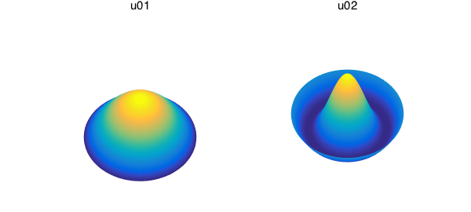
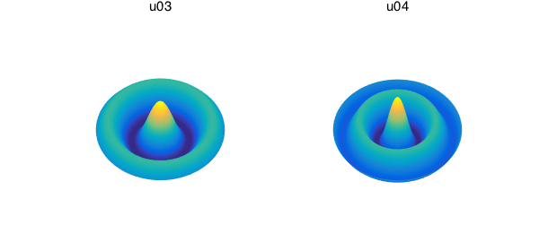
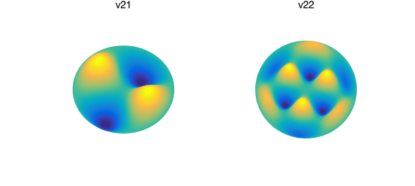
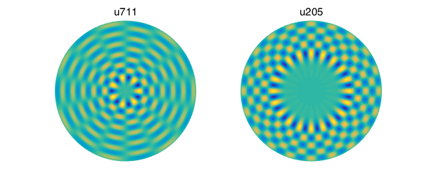
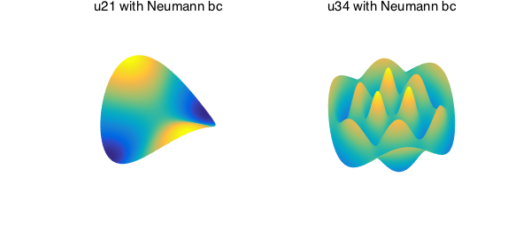
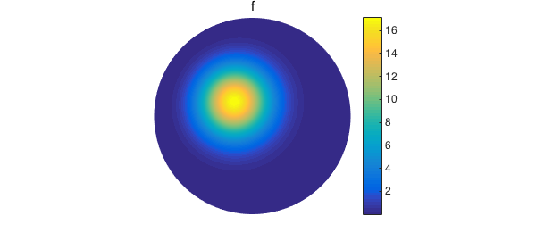
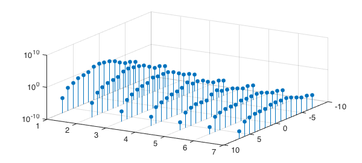
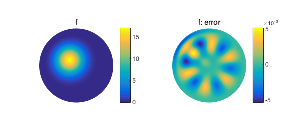
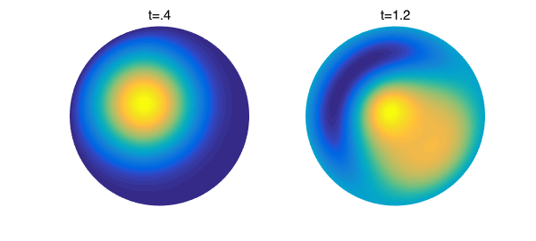
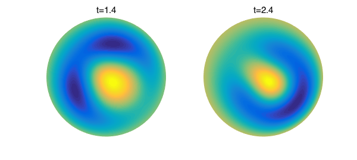

1. Introduction
Consider a circular drum of radius 1. When struck, vibrational patterns traverse across the surface of the drum, and at resonant frequencies, these patterns form what are called standing, or stationary, waves. The functions that describe these standing waves are sometimes referred to as harmonics , and they form an orthonormal basis for a large class of functions on the unit disk. While the disk harmonics are not used within Diskfun's constructor for a variety of reasons [6], they can be accessed easily with the diskfun.harmonic command. In this example, we explore these functions and use them to approximate solutions to the wave equation on the disk.
2. Deriving the harmonics
An idealized drum consists of a membrane with negligible and uniform thickness, clamped to a circular frame so that the displacement at the boundary is zero. Letting $\theta \in [-\pi, \pi]$, $r \in [0, 1]$, and $t \geq 0$ represent angular, radial and time variables, respectively, the displacement of the membrane, $u(\theta,r, t)$, will satisfy the wave equation with homogeneous Dirichlet conditions. In polar coordinates, this is expressed as follows: $$ \frac{\partial^2 u}{\partial t^2} = c^2 \left( \frac{\partial^2 u}{\partial r^2} + \frac{1}{r}\frac{\partial u}{\partial r} + \frac{1}{r^2}\frac{\partial^2 u}{\partial \theta^2} \right), \quad \quad u(\theta, 1, t) = 0, \quad \quad (1) $$ where $c$ is selected as a positive constant related to the speed at which transverse waves travel across the membrane. We will choose $c=1$ for convenience. We must also specify a set of initial conditions. In this case, we select a smooth function on the disk as the initial displacement of the membrane, and let the initial velocity be zero everywhere, so that $$ u(\theta, r, 0) = f(\theta, r), \quad \quad u_t(\theta, r, 0) = 0. \quad \quad (2) $$
Using separation of variables, one finds the following solutions to the problem described above: $$ u_{mn}(\theta, r, t) = A_{mn}\cos(c\lambda_{mn} t)J_m(\lambda_{mn} r)\cos(m \theta), \quad m \geq 0, n \geq 1, \quad \quad (3) $$ $$ v_{mn}(\theta, r, t) = B_{mn}\cos(c\lambda_{mn} t)J_m(\lambda_{mn} r) \sin(m\theta), \quad m \geq 1, n \geq 1, \quad \quad (4) $$ where $J_m$ is the $m$ th order Bessel function of the first kind. When $t=0$ and $A_{mn}$ and $B_{mn}$ are selected as normalization factors, these are eigenfunctions of Laplace's equation on the disk, with eigenvalues $-\lambda^2_{mn}$, where $\lambda_{mn}$ is the $n$ th positive root of the function $J_m(r)$ [2].
In Diskfun, we can construct these functions using diskfun.harmonic. The parameters passed to the function are $m$ and $n$, respectively, in (3) and (4). If $m$ is chosen as a nonnegative integer, then the function constructed is $u_{mn} = A_{mn} J_m(\lambda_{mn} r) \cos(m\theta)$, where $A_{mn}$ is the normalization factor. For $m<0$, the function $v_{|m|n} = B_{|m|n} J_{|m|}(\lambda_{|m|n} r) \sin(|m|\theta)$ is constructed. Here is how we construct the lowest order harmonic function:
u01 = diskfun.harmonic(0,1)
u01 =
diskfun object
domain rank vertical scale
unit disk 1 1.1
We can verify that u01 is an eigenfunction of Laplace's equation. The associated eigenvalue is related to the first positive zero of the function $J_0(r)$. We find this using roots in Chebfun, and then use lap to compute the Laplacian on the disk.
lam = roots(chebfun(@(r) besselj(0,r), [0 pi])); norm( lap(u01)+(lam)^2*u01 )
ans =
2.615852691766043e-13
Below, we plot u01 along with a few other harmonics. Harmonics with the parameter $m=0$ correspond to displacements in the vibrating drum problem where the drum is struck exactly in the center. This creates vibrational patterns that are radially symmetric.
subplot(1,2,1)
a = -100.4; b = 51.6;
plot(u01), axis off, view([a,b]), title('u01')
subplot(1,2,2)
u02 = diskfun.harmonic(0,2);
plot(u02), axis off, view([a,b]), title('u02'), snapnow
subplot(1,2,1)
u03 = diskfun.harmonic(0,3);
plot(u03), axis off, view([a,b]),title('u03')
subplot(1,2,2)
u04 = diskfun.harmonic(0,4);
plot(u04), axis off, view([a,b]), title('u04')


Other parameter choices correspond to initial displacements that do not guarantee radial symmetry. Here are what some of them look like.
subplot(1,2,1)
v21 = diskfun.harmonic(-2,1);
plot(v21), axis off, view([-99.5,60.3]), title('v21')
subplot(1,2,2)
v22 = diskfun.harmonic(-3,2);
plot(v22), axis off, view([-1.1e2,75]), title('v22'), snapnow
subplot(1,2,1)
u711 = diskfun.harmonic(7,11);
plot(u711), axis off,title('u711')
subplot(1,2,2)
u205 = diskfun.harmonic(20, 5);
plot(u205), axis off, title('u205'), snapnow


These functions all satisfy homogeneous Dirichlet conditions, but we can also compute with harmonics that satisfy homogeneous Neumann conditions:
uN21 = diskfun.harmonic(2,1, 'neumann');
uN34 = diskfun.harmonic(3,4, 'neumann');
subplot(1,2,1)
plot(uN21), axis off, view([-1.2e2,50]), title('u21 with Neumann bc')
subplot(1,2,2)
plot(uN34), axis off, view(a,b), title('u34 with Neumann bc')

When normalized, these functions form an orthonormal basis; we can check this property using sum2, which performs integration over the unit disk:
int1 = sum2(u01.*u02) int2 = sum2(v22.*u711) int3 = sum2(u03.*u03)
int1 =
3.264629115552502e-16
int2 =
2.580618976163478e-19
int3 =
1.000000000000001
3. Approximations with harmonics
Any function that is square integrable on the disk and satisfies homogeneous Dirichlet conditions can be expressed using the following series expansion [2]: $$ f(\theta, r) = \sum_{n = 1}^{\infty} J_0(\lambda_{0,n} r) + \sum_{m = 1}^{\infty} \sum_{n = 1}^{\infty} J_m(\lambda_{mn} r) \left( a_{mn}\cos(m\theta) + b_{mn} \sin(m\theta) \right). \quad\quad (5) $$ In this example, we truncate the above expansion to approximate a modified Gaussian function $f$ that is homogeneous on the boundary of the disk:
f = diskfun(@(x,y) 20*(1-x.^2-y.^2).^2.*exp(-6*(x+.25).^2-6*(y-.2).^2));
clf
plot(f), title('f'), axis off, colorbar

The coefficients in (5) can be computed directly using the normalized functions $u_{mn}$ and $v_{mn}$, as $$ a_{mn} = \int_{-\pi}^{\pi}\int_{0}^{1} u_{mn}(\theta, r) f(\theta, r) r \, dr \, d \theta, \quad \quad (6) $$ and $$ b_{mn} = \int_{-\pi}^{\pi}\int_{0}^{1} v_{mn}(\theta, r) f(\theta, r) r \, dr \, d \theta. \quad \quad (7) $$ The following code computes the coefficients for $0 \leq m \leq 7$ and $1 \leq n \leq 7$:
N = 7; NN = 7; k = 1;
csz = (N+1).*NN*2-NN;
coeffs = zeros(csz,3);
for m = 0:N
for n = 1:NN
for j = 1:(1+double(~(m==0)))
H = diskfun.harmonic((-1)^j*m,n);
coeffs(k,1) = sum2(f.*H);
coeffs(k,2:3) = [(-1)^j*m n];
k = k + 1;
end
end
end
We examine the decay of the coefficients below, using the convention that $m < 0$ denotes the coefficient $b_{|m|n}$ in (7). Convergence in $n$ depends not only on the smoothness of $f$, but also on whether the Fourier coefficients of $f$, which are functions of $r$, satisfy additional boundary conditions related to the Laplacian operator (see [1]).
stem3(coeffs(:,2),coeffs(:,3),abs(coeffs(:,1)),'filled')
set(gca,'ZScale','log'), view([1.205e2,38])
xlabel('m'), ylabel('n'), zlabel('abs. value of coeffs')

Now that we have the coefficients, we can compute the terms of the series. Here, we will approximate $f$ by truncating (5) so that $0 \leq m \leq 5$ and $1 \leq n \leq 5$.
coeffs = coeffs(abs(coeffs(:,2)) < 6 & abs(coeffs(:,3)) < 6, :);
[csz,~] =size(coeffs);
fproj = diskfun([]);
for k = 1:csz
H = diskfun.harmonic(coeffs(k,2),coeffs(k,3));
fproj = fproj + coeffs(k,1)*H;
end
In this case, the approximation is accurate only up to two digits:
errf = norm(f-fproj)
errf = 0.003130282187231
Below, we plot the approximation to $f$, as well as the error function.
subplot(1,2,1)
plot(fproj), title('f'), axis off, colorbar
subplot(1,2,2)
plot(f-fproj), title('f: error'), axis off, colorbar, snapnow

The expansion in (5) can be modified so that functions with nonhomogenous boundary conditions can also be expressed in terms of the the harmonics. Additionally, there are ways to compute the coefficients in (5) more efficiently [5].
4. An analytic solution to the wave equation
We can use the superposition principle to state the general solution to the vibrating drum problem described in (1). Given initial conditions as in (2), the solution to (1) is $$ u(\theta, r, t) = \sum_{n = 1}^{\infty} a_{0,n} \cos(c\lambda_{0,n} t) J_0(\lambda_{0,n}r) + \sum_{m = 1}^{\infty} \sum_{n = 1}^{\infty} \cos(c\lambda_{mn} t)J_m(\lambda_{mn}r) \left( a_{mn} \cos(m\theta) + b_{mn} \sin(m\theta) \right). \quad \quad (8) $$ Recall that $c$ is a constant and in this example, we have selected $c=1$. The coefficients $a_{mn}$ and $b_{mn}$ depend on the initial displacement $u(t, r, 0) = f(t,r)$. If we let $t=0$ in (8), we see that they are given by (6) and (7). More generally, any vibrational pattern producible on the drum is in fact a linear combination of standing waves on the disk.
In this example, we choose $f$ from Section 3 as the initial displacement, and plot an approximation to $u$ using diskfun.harmonic. While this is a theoretically interesting example that illuminates the role of the harmonics in solutions to the wave equation, it is far from numerically efficient. We therefore begin by reducing the number of coefficients used in our approximation to $f$, so that in (5), $0 \leq m \leq 3$ and $1 \leq n \leq 3$:
coeffs = coeffs(abs(coeffs(:,2)) < 4 & abs(coeffs(:,3)) < 4, :); [csz, ~] = size(coeffs); NN = 3;N = 3;
We require the value $\lambda_{mn}$, which is the $n$ th positive root of the Bessel function $J_m(r)$, for each $(m,n)$. We compute these using roots, and bound the interval searched over with simple estimates [3, 4].
broots = zeros(csz, 3);
% first compute for L = 0
Jzero = roots(chebfun(@(x) besselj(0,x), [sqrt((3/4)^2*pi^2) (NN)*pi]));
broots(1:NN, :) = [ Jzero, zeros(NN,1),(1:NN)'];
% now compute for L = 1,2,3
k = NN+1;
for L = 1:N
Jzero = roots(chebfun(@(x) besselj(L,x), [sqrt((3/4)^2*pi^2+L^2) (NN+L/2)*pi]));
broots(k:2:k+2*NN-1, :) = [Jzero -L*ones(NN,1), (1:NN)'];
broots(k+1:2:k+2*NN, :) = [Jzero L*ones(NN,1), (1:NN)'];
k = k+2*NN;
end
The following code computes the solution. Since the code is slow to execute, it is best to first store a sequence of diskfuns representing the solution at $t = 0, 0.1, 0.2, \dots, 4.0$. These can then be plotted consecutively to visualize the solution through time.
tm = linspace(0, 4, 41);
k = 1;
T = diskfun([]);
u=cell(1,length(tm));
for i = 1:length(tm)
t = tm(i);
for k = 1:csz
H = coeffs(k,1)*diskfun.harmonic(coeffs(k,2), coeffs(k,3));
T = T + cos(broots(k,1).*t).*H;
end
u{i} = T;
end
The loop below will plot the solution at every timestep; we display only a few snapshots in time here.
clf
for j = 1:length(u)
view([-22, 39.5]);
v = get(gca,'view');
plot(u{j})
set(gca,'view',v);
zlim([-45 45])
axis square
axis off
end
subplot(1,2,1)
plot(u{5})
axis off
title('t=.4')
subplot(1,2,2)
plot(u{13})
axis off
title('t=1.2'), snapnow
subplot(1,2,1)
plot(u{15})
axis off
title('t=1.4')
subplot(1,2,2)
plot(u{25})
axis off
title('t=2.4')


5. References
[1] J. P. Boyd and F. Yu, Comparing seven spectral methods for interpolation and for solving the Poisson equation in a disk: Zernike polynomials, Logan & Shepp ridge polynomials, Chebyshev & Fourier series, cylindrical Robert functions, Bessel & Fourier expansions, square-to-disk conformal mapping and radial basis functions, J. Comp. Phys., 230.4 (2011), pp. 1408-1438.
[2] R. V. Churchill and J. W. Brown, Fourier Series and Boundary Value Problems, McGraw-Hill, 1978.
[3] A. Elbert, Some recent results on the zeros of Bessel functions and orthogonal polynomials. J. Comp. Appl. Math., 133.1 (2001), pp. 65-83.
[4] R. C. McCann, Lower bounds for the zeros of Bessel functions. Proc. Amer. Math. Soc., (1977), pp. 101-103.
[5] M. O'Neil, Michael, F. Woolfe, and V. Rokhlin, An algorithm for the rapid evaluation of special function transforms. Appl. Comp. Harm. Anal., 28.2 (2010): pp. 203-226.
[6] H. Wilber, A. Townsend, and G. B. Wright, Computing with functions in spherical and polar geometries II. The disk, SIAM J. Sci. Comput., submitted, 2016.